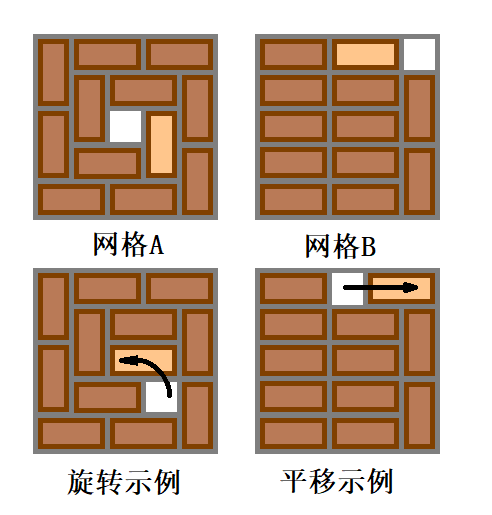

有一块 $n$ 行 $m$ 列的网格板，$n, m$ 都是奇数。网格上平铺着一些 $1 \times 2$ 的积木。积木可以旋转，不能重叠。这些积木共有 $\dfrac {nm - 1} 2$ 块，也就是说，网格板上只有一格的空位。
你可以做两种操作：
将一块与空白格相邻 (指有公共边) 的积木旋转 $90^\circ$ 到空白格中；
将一块与空白格相邻的积木平移至空白格中。
如图所示 (被移动的积木颜色较浅)：
请你用以上两种操作将给定的网格板变换为指定的状态。
第一行包含两个正奇数 $n, m$ ($n, m \leq 1999$)，分别表示网格的行数和列数。
接下来 $n$ 行，每行 $m$ 个字符，描述网格板的初始状态：
< 表示这个格子是一块积木的左半部分；
> 表示这个格子是一块积木的右半部分；
n 表示这个格子是一块积木的上半部分；
u 表示这个格子是一块积木的下半部分；
o 表示这个格子是空的。
再接下来 $n$ 行，每行 $m$ 个字符，描述你需要将网格板变成的目标状态，格式同上。
你需要输出一个长度不超过 $8 \times 10^6$ 的字符串，按顺序表示你的操作：
L 表示你移动了空白格左侧的积木；
R 表示你移动了空白格右侧的积木；
U 表示你移动了空白格上方的积木；
D 表示你移动了空白格下方的积木。
当然，没有操作的话输出空串就好了。
如果我们把这 $n m$ 个网格看成一张 $n m$ 个点的网格图 $G_g$ (同时它也是二分图)，那么每个 $1 \times 2$ 的积木都可以看成图上的一条边。这 $\dfrac {n m - 1} 2$ 个积木构成了 $G_g$ 的一个最大匹配 (边独立集)。
容易发现，初始网格和目标网格均为一个最大匹配，我们将其记入 $M_1, M_2$。
每次操作，相当于对于 $M_1$ 的一个未匹配点 $v$，选择一条出边与其匹配，然后将原有的边替换掉。大概可以理解为一个 "增广" 的过程 (更确切地说，是寻找 "交错路" 的过程，因为 "增广路" 是不存在的)。
而我们的目标，就是寻找若干条 "交错路"，使得讲匹配 $M_1$ "变" 成 $M_2$。
根据二分图的经典套路，我们取两个匹配的对称差 $M' = M_1 \oplus M_2$。则容易证明，$M'$ 由至多一条链与若干个圈构成，如下图所示：
显然，$M'$ 中存在一条 "链" 当且仅当如果两张图中的 "未匹配点" 不同。因此，如果两张图中 "未匹配点" 不同的话，先把这条链 "增广" (还是注意这里的 "增广" 不是真正意义上的增广，因为匹配大小没有变) 了。于是现在只需考虑 $M'$ 中有若干个圈。
我们考虑依次将每个圈消除掉。
设这个圈为 $C$，当前的 "光标" (即空位置/未匹配点) 在位置 $p$。我们先考虑将 $p$ "移到" $C$ 旁边。此时，不免会有一些匹配边/未匹配边边的状态被改变，不过不用担心，这个结构在 $M'$ 中还是清晰的——就是 $p$ 走到 $C$ 的一条链。
然后，我们将 "光标" 沿着 $p$ 绕一圈后，再原路返回，就可以发现，这个圈就被消掉了。具体的过程如下图所示：

其实，在具体实现的过程中，我们不需要找到所有的圈，然后依次暴力处理。只需 (将链删除后) 从 $p$ 开始 dfs，每当搜到一条 $M'$ 中的边后，说明已经找到了一个圈，然后将 $p$ 绕一圈后继续搜索。
这样每个点至多被搜到一次，总时间复杂度就是 $O \left( n m \right)$ 的，操作次数不会超过 $2 n m$ (由于每个点被访问不超过 $2$ 次)。
#include <bits/stdc++.h>
typedef std::pair <int, int> pr;
const int N = 2054, N2 = N * N;
char out[4] = {76, 85, 82, 68};
int R, C;
int B1, M1[N2];
int B2, M2[N2];
int d[4], buf[N * 2], *rd = buf + N;
bool used[N2];
char str[N];
int readMap(int *match) {
int i, j, blank = 0, n = 1;
for (i = 0; i < R; ++i)
for (scanf("%s", str), j = 0; j < C; ++j, ++n)
switch (str[j]) {
case 111: blank = n; break;
case 60: match[n] = n + 1; break;
case 62: match[n] = n - 1; break;
case 110: match[n] = n + C; break;
case 117: match[n] = n - C; break;
}
return assert(blank), blank;
}
inline void move(int dir) {int x = M1[B1] = B1 + d[dir]; std::swap(B1, M1[x]), M1[B1] = 0, putchar(out[dir]);}
inline void augment() {for (; B1 != B2; move(rd[M2[B1] - B1]));}
inline void translate(int dir) {int B = B1; for (move(dir); B1 != B; move(rd[M2[B1] - B1]));}
void dfs() {
int i, j, x = B1, y; bool ban = used[x] = true;
for (i = 0; i < 4; ++i) {
switch (i) {
case 0: ban = !((x - 1) % C); break;
case 1: ban = x <= C; break;
case 2: ban = !(x % C); break;
case 3: ban = x >= (R - 1) * C; break;
}
if (ban || used[y = x + d[i]]) continue;
if (M1[y] != M2[y]) translate(i);
used[y] = true, j = rd[y - M1[y]];
move(i), dfs(), move(j), assert(x == B1);
}
}
int main() {
scanf("%d%d", &R, &C);
rd[ d[0] = -1 ] = 0;
rd[ d[1] = -C ] = 1;
rd[ d[2] = 1 ] = 2;
rd[ d[3] = C ] = 3;
B1 = readMap(M1), B2 = readMap(M2), augment(), dfs();
return putchar(10), 0;
}
坑1：判断一个格子能否向左走是不要用 $x \bmod C = 1$，要用 $\left( x - 1 \right) \bmod C = 0$，因为前者当 $C = 1$ 时会出问题。
坑2：在搜索时注意全局变量和局部变量的联系和区别，不要用错了。